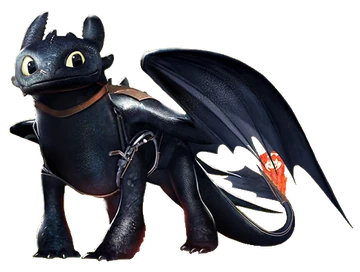

Über Ohnezahn
Ohnezahn, auch bekannt als der Nachtschatten, ist ein intelligenter, treuer und außergewöhnlich schneller Drache aus der Welt von Drachenzähmen leicht gemacht. Mit seinen tiefschwarzen Schuppen, leuchtend grünen Augen und seiner engen Freundschaft zu Hicks hat Ohnezahn die Herzen vieler Fans erobert. Als letzter seiner Art verkörpert er sowohl Stärke als auch Sensibilität. Seine Fähigkeit, lautlos zu fliegen, macht ihn einzigartig unter den Drachen. Auf dieser Seite erfährst du alles über seine Abenteuer, Fähigkeiten und besondere Beziehung zu Hicks. Ohnezahn steht für Vertrauen, Freundschaft und die Kraft, anders zu sein — ein wahrer Held unter den Drachen.
Ohnezahn ganzkörper
Ohnezahn’s Charakteristiken
- Er ist schnell.
- Er ist schlau.
- Er ist tödlich.